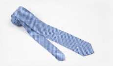

M

- Weekly Pick
- 
- 2 1/2" White and Blue Checked cotton Skinny Tie
- Loop Us IN
- Tightly knotted or hanging loose? Fitted suit or selvedge denim? Share your style with us.
- The Quarterly
- Our newsletter is simple and brief for the hard-pressed gentleman.
- Style Guide
- There are eighty-five ways to knot a tie. we'll show you the Essentials.